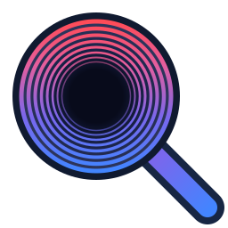

Phase Pal
OpenChatLink
Your chats, now in Phase Pal.
Choose your conversations, how much history to bring over, and when they sync.
Connect to Phase Pal
Enable External Conversations in Phase Pal, then copy your connection code.
Where do I find my connection code?
- In Phase Pal, open Chat Settings → General → External Conversations and enable sync.
- Select Copy connection code and paste it above.
- For web chats, sign in to ChatGPT or Claude in Chrome.
Connection options